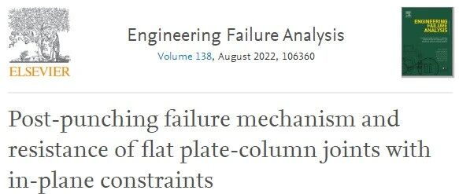
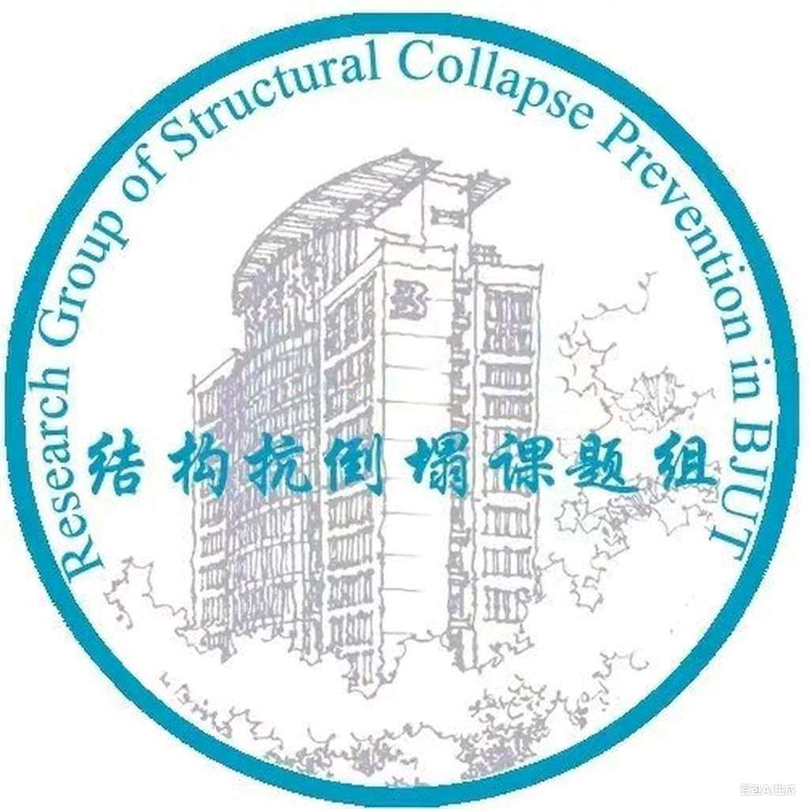

面内约束下板柱节点的冲剪后受力机理及强度计算方法
以下文章来源于北工大结构抗倒塌课题组 ，作者杨友喆等

建筑结构抗倒塌课题组，主要从事工程结构和材料在地震、冲击、火灾等灾害荷载下的抗倒塌和防护性能研究工作。
面内约束下板柱节点的冲剪后受力机理及强度计算方法
Post-Punching Failure Mechanism and Resistance of Flat Plate-Column Joints with In-plane Constraints

论文链接：
https://authors.elsevier.com/c/1f1X1_UjRISDQE
doi: 10.1016/j.engfailanal.2022.106360
五十天免费下载：
https://authors.elsevier.com/a/1f1X1_UjRISDQE
一、研究背景
板柱节点易发生脆性冲剪破坏，进而引发整体结构的连续倒塌。实际结构中，楼板对节点存在面内约束，节点发生冲剪后，穿柱钢筋可充分受拉实现更大的变形能力和承载力储备，显著影响结构冲剪破坏后连续倒塌行为。现有研究大多针对无面内约束下节点冲剪破坏前的承载力，然而连续倒塌是结构大变形下的力学行为，还需要关注节点冲剪破坏后的变形能力和承载力储备。本研究对8个面内约束的板柱节点开展静力大变形试验研究，分析了面内约束板柱节点的冲剪后受力机理，以及楼板厚度、配筋量、延伸负弯矩钢筋、冲剪方向对冲剪前后承载力的影响。在此基础上，提出了节点冲剪后承载力的理论计算方法，并量化分析了不同位置钢筋的承载力贡献，为节点抗倒塌设计提供参考。
二、试件设计
结构原型为柱距6000 mm 的4×4跨平板结构车库，试件取底层中柱节点，如图1所示。当中柱在意外灾害作用下发生初始破坏后，相邻两跨楼板变为一跨楼板，取该场景下反弯点范围以内的楼板和柱作为试验试件。为模拟周边楼板的面内约束，试件楼板边缘和大尺寸边界梁整体现浇，以模拟周边楼板的约束作用，边界梁尺寸和配筋根据数值模拟和理论计算确定。试验中分别开展了向上（UPS）和向下（DPS）冲剪以模拟不同场景下的节点失效。为了研究不同结构参数对RC板柱结构抗倒塌性能的影响，本文在标准试件（UPS-1/DPS-1）的基础上开展了减小板厚件（UPS-2/DPS-2），增加配筋件（UPS-3/DPS-3）和受弯钢筋通长件（UPS-4/DPS-4）的试验研究。试件配筋图如图2所示。

（a）

（b）
图1 原型结构示意图

（a）UPS-1

(b) DPS-1
三、试验结果
图3是UPS-1和DPS-1的承载力-位移曲线。冲剪破坏前，试件通过受弯抵抗外荷载。冲剪破坏后第一阶段（The first sub-stage），节点由穿过冲剪裂缝的钢筋提供承载力。

图3 UPS-1和DPS-1试件承载力-位移曲线

（a）UPS-1 (截面I-I)

（b）UPS-1 (截面 II-II)

（c）DPS-1 (截面 I-I)

(d）DPS-1 (截面 II-II)
图4 UPS-1/DPS-1冲剪后受力机理图
两类冲剪模式下由于负弯矩钢筋和整体性钢筋的约束条件不同，节点存在两种失效模式，如图5所示。UPS试件，非通长的FRs在板底，冲剪破坏后只有混凝土保护层为其提供约束，其端部最终锚固失效（图5a）。DPS试件中板底布置整体性钢筋IRs，并伸入边界梁内。因此它们在大变形下仍可以抵抗荷载，直至完全断裂（图5b）。

（a）UPS-1

（b）DPS-1
图5试件的最终破坏模式
两类失效模式下节点的冲剪后承载力和变形也存在较大差别（图6）。UPS系列在达到冲剪破坏后第一个关键点（Fs1）后承载力仍可稳定提升，而DPS系列在Fs1后承载力逐步下降。在此基础上通过对比UPS-1/DPS-1，分析了板厚、配筋量和延伸负弯矩钢筋对承载力和变形能力的影响。

（a）UPS系列

（b）DPS系列
图6 UPS和DPS系列试件的承载力-位移曲线
四、冲剪/冲剪后承载力计算
冲剪承载力计算
使用AS 3600、GB 50010、ACI 318、EN 1992规范对节点承载力进行计算，结果见表1。面内约束下有利于试件的发挥压膜作用，进而提高试件的冲剪承载力。然而，现有规范是基于没有面内约束的节点试验，因此它们低估了结构的冲剪承载力。这四个规范的承载力预测值安全储备至少为34%。
表1 不同规范的冲剪承载力计算 (单位: kN)

冲剪后承载力计算
冲剪后承载力主要由穿柱的受弯钢筋（FRs）和整体性钢筋（IRs）提供。根据图4的机理示意图确定各层钢筋的转动变形和轴向应力，进而计算冲剪后承载力，这取决于钢筋受到的两类约束条件：1）钢筋有效约束，在大变形下最终断裂；2）钢筋受到部分混凝土约束，其应力状态可根据混凝土的抗崩裂强度确定。（具体推导和公式见论文）
表2给出了冲剪后承载力计算结果（Fpp,cal）和试验结果（Fpp,t）的对比。Fpp,cal/Fpp,t平均值为0.95，表明计算准确率较高。根据该计算进一步确定了不同冲剪模式下各层钢筋的承载力贡献：UPS试件中IRs和FRs的总贡献率分别为57%和43%，而DPS系列中IRs和FRs的贡献率分别为18%和82%。
表2 各层钢筋承载力计算值与试验值对比（unit: kN）

五、主要结论
1)与标准试件UPS-1，DPS-1相比，减小板厚试件UPS-2和DPS-2的冲剪承载力分别降低了40%和38%，提高30%钢筋数量试件UPS-3和DPS-3的冲剪承载力变化均在5%以内。
2)冲剪后承载力主要取决于穿柱钢筋的数量。本试验中不同结构参数试件的穿柱钢筋数量和横截面面积相同，因此UPS和DPS系列的冲剪后承载力的最大差距分别为11%和9%。在整个冲剪破坏过程中，DPS系列的平均耗能能力比UPS系列高9%。
3)与试验值相比，使用本文计算方法得到的冲剪后承载力平均准确率为95%。
近期内容回顾

1.A preliminary analysis and discussion of the condominium building collapse in surfside, Florida, US, June 24, 2021, Frontiers of Structural and Civil Engineering, 2021, 1-14. (新论文：美国佛罗里达公寓大楼倒塌的初步分析和讨论)
2.Post-punching mechanisms of slab-column joints under upward and downward punching actions, Magazine of Concrete Research, 2021, 73(6): 302-314. (新论文：不同冲剪方向下板柱节点抗倒塌性能研究)
3. Simulation of punching and post-punching shear behaviours of RC slab–column connections, Magazine of Concrete Research, 2021, 73(22): 1135-1150. (新论文：钢筋混凝土板柱节点冲切及冲切破坏后行为的数值模拟)
4.Enhancing post-punching performance of flat plate-column joints by different reinforcement configurations, Journal of Building Engineering, 2021, 43: 102855. (新论文：不同钢筋构造对RC板柱节点冲剪破坏后性能的加强作用)
5.Pre- and post-punching performances of eccentrically loaded slab-column joints with in-plane restraints, Engineering Structures, 2021, 248: 113249. (新论文：偏心加载下的面内约束板柱节点冲剪破坏全过程性能研究)
6.Progressive Collapse of Flat Plate Substructures Initiated by Upward and Downward Punching Shear Failures of Interior Slab-Column Joints, Journal of Structural Engineering-ASCE, 2022, 148(2): 04021262.(新论文：中柱节点向上和向下冲剪破坏引起的板柱子结构连续倒塌研究）
7. Experimental and Numerical Investigation on Progressive Collapse ofPrecast Reinforced Concrete Frame Substructures with Wet Connections, Engineering Structures, 2022, 256:114010.(新论文：湿式装配式梁柱子结构抗连续倒塌性能研究）
8.Experimentaland numerical investigation of dynamic progressive collapse of reinforcedconcrete beam-column assemblies under a middle-column removal scenario，Structures，2022, 38:979-992.（新论文：混凝土梁柱子结构动力连续倒塌的试验和数值研究）
9.Prediction of failure modes, strength, and deformation capacity of RC shear walls through machine learning, Journal of Building Engineering, 2022, 50:104145.（新论文：基于机器学习的RC剪力墙破坏模式、承载力和变形能力预测）
---End---
相关研究
特刊征稿
专著
人工智能与机器学习
城市灾害模拟与韧性城市
高性能结构与防倒塌
新论文：抗震&防连续倒塌：一种新型构造措施
长按识别二维码，关注我们的科研动态